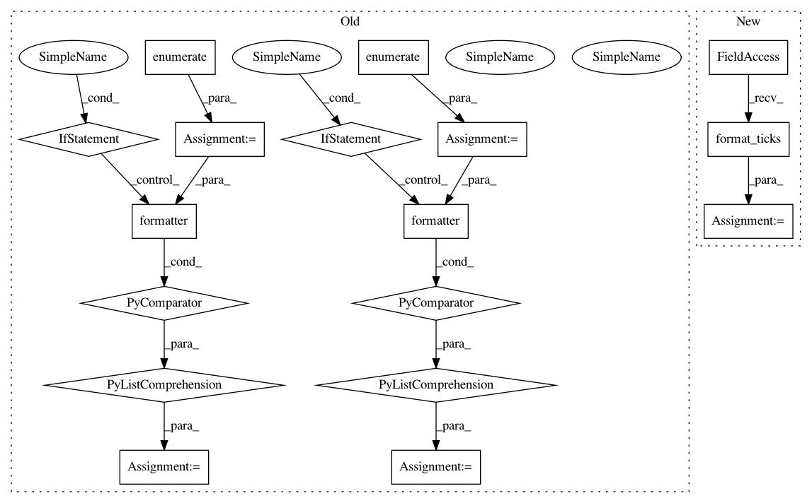

b715a349a448a16132aaa97038167c4301b9a206,lib/mpl_toolkits/axisartist/axislines.py,Floating,get_tick_iterators,#Floating#Any#,306
Before Change
major = self.axis.major
majorLocs = major.locator()
major.formatter.set_locs(majorLocs)
majorLabels = [major.formatter(val, i)
for i, val in enumerate(majorLocs)]
minor = self.axis.minor
minorLocs = minor.locator()
minor.formatter.set_locs(minorLocs)
minorLabels = [minor.formatter(val, i)
for i, val in enumerate(minorLocs)]
tr2ax = axes.transData + axes.transAxes.inverted()
def _f(locs, labels):
After Change
minor = self.axis.minor
minorLocs = minor.locator()
minor.formatter.set_locs(minorLocs)
minorLabels = minor.formatter.format_ticks(minorLocs)
tr2ax = axes.transData + axes.transAxes.inverted()
def _f(locs, labels):
In pattern: SUPERPATTERN
Frequency: 3
Non-data size: 17
Instances
Project Name: matplotlib/matplotlib
Commit Name: b715a349a448a16132aaa97038167c4301b9a206
Time: 2019-01-28
Author: anntzer.lee@gmail.com
File Name: lib/mpl_toolkits/axisartist/axislines.py
Class Name: Floating
Method Name: get_tick_iterators
Project Name: matplotlib/matplotlib
Commit Name: b715a349a448a16132aaa97038167c4301b9a206
Time: 2019-01-28
Author: anntzer.lee@gmail.com
File Name: lib/mpl_toolkits/axisartist/axislines.py
Class Name: Fixed
Method Name: get_tick_iterators
Project Name: matplotlib/matplotlib
Commit Name: b715a349a448a16132aaa97038167c4301b9a206
Time: 2019-01-28
Author: anntzer.lee@gmail.com
File Name: lib/matplotlib/axis.py
Class Name: Axis
Method Name: iter_ticks
Project Name: matplotlib/matplotlib
Commit Name: b715a349a448a16132aaa97038167c4301b9a206
Time: 2019-01-28
Author: anntzer.lee@gmail.com
File Name: lib/mpl_toolkits/axisartist/axislines.py
Class Name: Floating
Method Name: get_tick_iterators